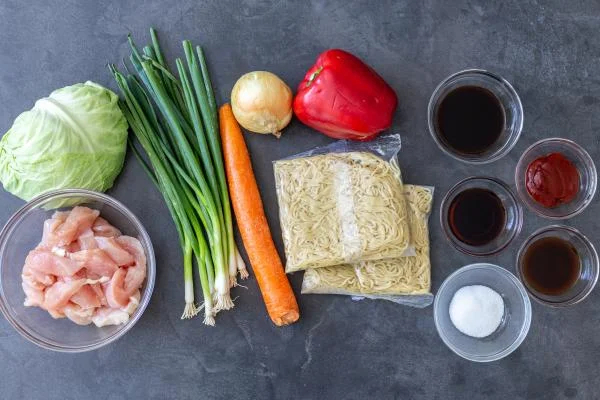

Recipe: Yakisoba
:max_bytes(150000):strip_icc():format(webp)/GettyImages-1159406998-2000-89ab369fc6c4415c82dc294b55e8555f.jpg)
Yakisoba is a classic Japanese noodle dish with a salty, sweet and sour sauce.
Made in one-pan, this recipe is so easy to make and is always a crowd pleaser.
Yakisoba noodles have become quite the staple in our home. We love ordering takeout just like
the next family, but this recipe is so quick we can whip it up before a delivery order could even arrive.
These noodles are made with chicken, but if you are craving beef try making Beef Yakisoba instead.
Also, feel free to omit the chicken or beef if you are a vegetarian! The noodles are just as delicious
meatless or tossed with some grilled tofu instead.
Ingredients for Yakisoba Noodles:
- Red Bell Pepper - you can also use green or yellow bell peppers.
- Carrot - add some color by adding mixed colored carrots.
- Green Onions -if you don’t have any on hand, you can skip out on it.
- Boneless Chicken - beef, pork, shrimp, tofu or more veggies are also great options.
- Cabbage Head - green cabbage is the best in this recipe.
- Yellow Onion - you can also use white onions.
- Yakisoba Noodles - ramen noodles, sold in most grocery stores fridge section.

Yakisoba Sauce Ingredients:
- Sugar - white sugar will give you the best flavors in this dish.
- Soy Sauce - low sodium soy sauce will make the best option.
- Oyster Sauce - that deep flavor, such a great addition to the sauce.
- Ketchup - this will add a tart and sweet taste to the dish.
- Worcester Sauce - is a must for the recipe, it gives it a really great deep flavor.